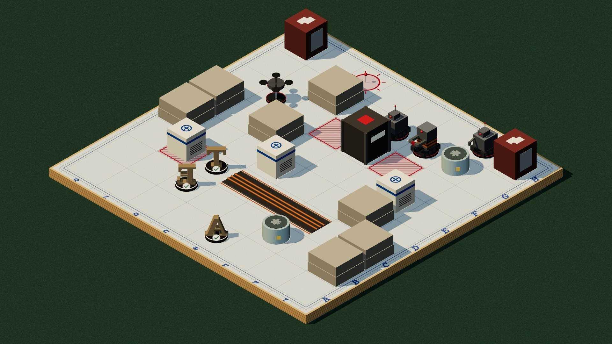

1
2
3
UYANDI
TUR
1/8
SON 2 TUR
1
2
3
4
5
6
7
8
MAKİNELER
GÖREV · İKMAL
DAR KORİDOR
İkmal kasası · F4
Amaç: kasadan ikmal al
CAN
GÜVEN
11
SİVİL SUNUCU
3
TELSİZ · K-07
Yeni bir robot uyandı: H2.
TELSİZ
L
1
KURALLAR
?
GERİ ÇEKİL
1
T
TEKNİSYEN
✓ TUR BİTTİ
2
E
EMP UZMANI
✓ TUR BİTTİ
3
A
ANALİST
PLAKA
✓ TUR BİTTİ
Geri al
Z
MAKİNELER HAREKET EDİYOR
girdi kilitli · 2/3 hamle